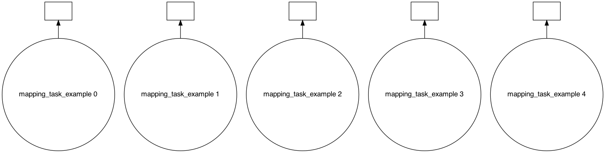
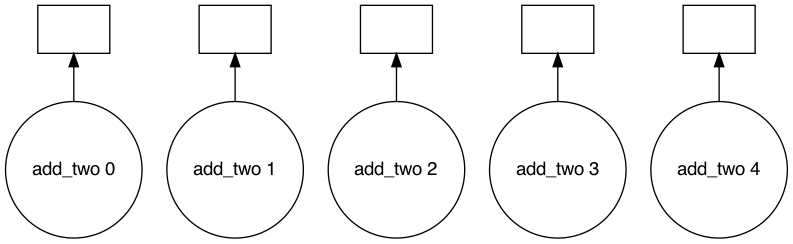
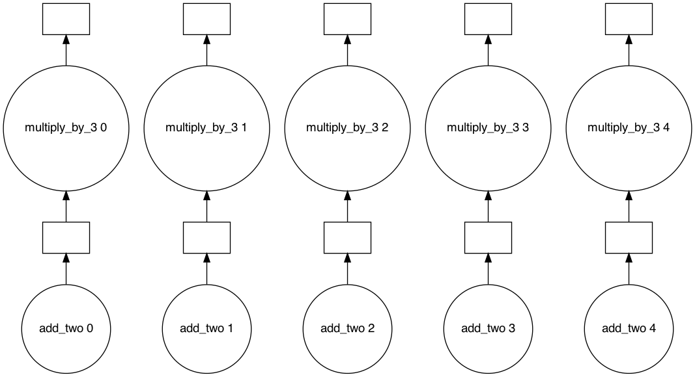
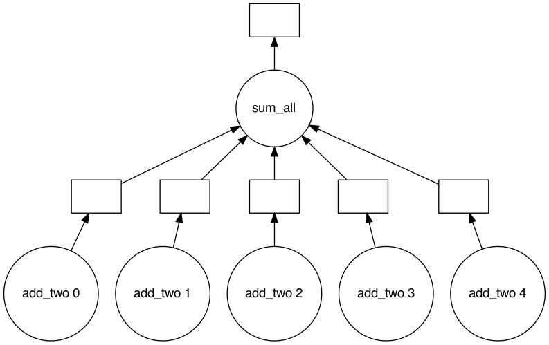
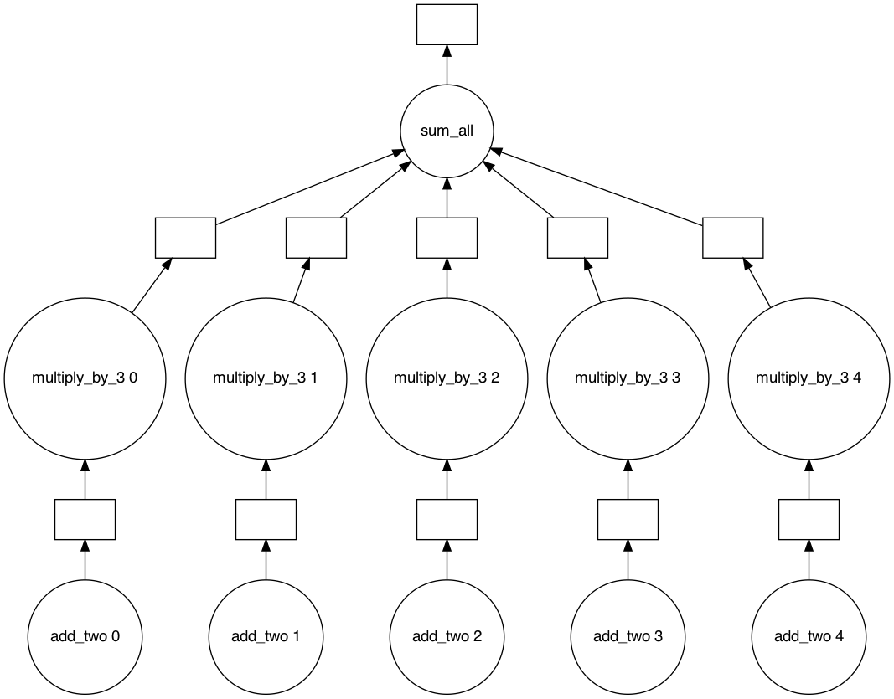
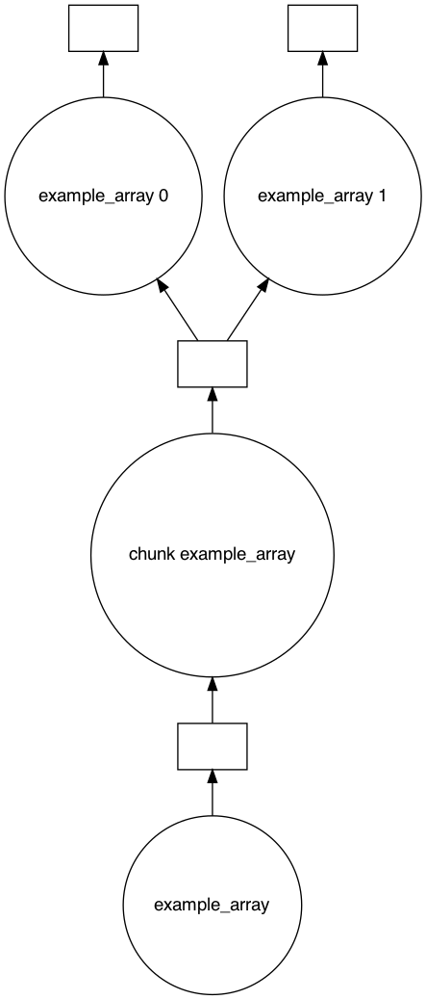
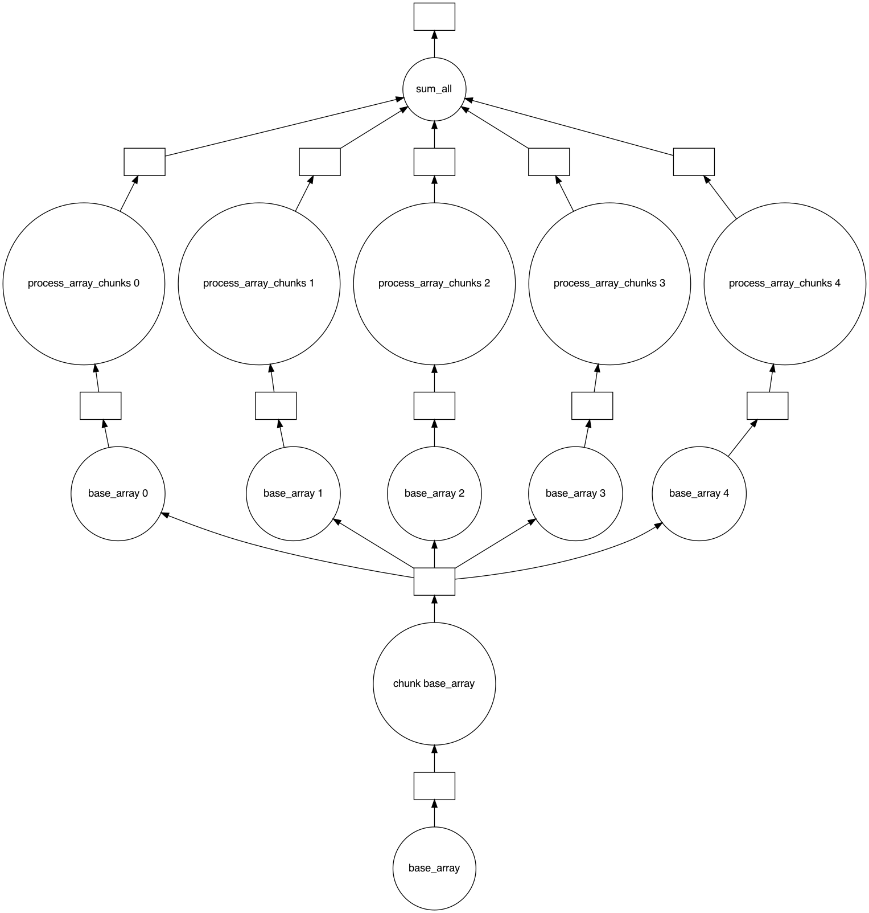

Types of Tasks
We’ve already seen the most basic type of task we can register, one that just wraps around an arbitrary function like the one below:
import daglib
dag = daglib.Dag()
@dag.task()
def task_1():
print("This is task 1")
There are other special types of tasks that you can create such as:
Mapping tasks
Joining tasks
Chunked tasks
Mapping tasks
Mapping tasks are dynamically generated from either a static iterable, or from the output of another task that returns an iterable.
Mapping task from static iterable
import daglib
dag = daglib.Dag()
@dag.task(map_to=[1, 2, 3, 4, 5], final=True)
def mapping_task_example(n):
"""Note that the print statements may not be linear since tasks are run in parallel"""
print(f"mapping_task_example function running for {n}")
dag.run()
mapping_task_example function running for 1
mapping_task_example function running for 2
mapping_task_example function running for 3
mapping_task_example function running for 4
mapping_task_example function running for 5
(None, None, None, None, None)
dag.visualize()

import daglib
dag = daglib.Dag()
@dag.task(map_to=[1, 2, 3, 4, 5], final=True)
def add_two(n):
return n + 2
dag.run()
(3, 4, 5, 6, 7)
dag.visualize()

Mapping task from the output of another task
Note that the value passed to map_to must match the function name of the task to map to.
import daglib
dag = daglib.Dag()
@dag.task(map_to=[1, 2, 3, 4, 5])
def add_two(n):
return n + 2
@dag.task(map_to="add_two", final=True)
def multiply_by_3(n):
return n * 3
dag.run()
(9, 12, 15, 18, 21)
dag.visualize()

Joining tasks
When you want to condense dynamically generated tasks, likes one created by using the map_to argument, or ones created from result_chunks argument which we’ll see in a little, you’ll want to use joining tasks.
import daglib
dag = daglib.Dag()
@dag.task(map_to=[1, 2, 3, 4, 5])
def add_two(n):
return n + 2
@dag.task(joins="add_two", final=True)
def sum_all(*tasks):
return sum(tasks)
dag.run()
25
dag.visualize()

import daglib
dag = daglib.Dag()
@dag.task(map_to=[1, 2, 3, 4, 5])
def add_two(n):
return n + 2
@dag.task(map_to="add_two", final=True)
def multiply_by_3(n):
return n * 3
@dag.task(joins="multiply_by_3", final=True)
def sum_all(*tasks):
return sum(tasks)
dag.run()
(9, 12, 15, 18, 21, 75)
dag.visualize()

Chunked tasks
We’ve seen how to dynamically spawn tasks from an iterable using map_to, but in some cases, you’ll want to break up the single result of a task into multiple chunks, so you can operate on them in parallel.
Note: The return type of a chunked task must be iterable.
import daglib
dag = daglib.Dag()
@dag.task(result_chunks=2, final=True)
def example_array():
return [1, 2, 3, 4, 5, 6, 7, 8, 9, 10]
dag.run()
([1, 2, 3, 4, 5], [6, 7, 8, 9, 10])
dag.visualize()

In the task graph, you can see an extra step be generated called chunk example_array. This step takes whatever task has been specified as a chunked task and breaks it up into N-number of chunks (the chunks are not guaranteed to be of the same length, see numpy.array_split for more info).
Putting it all together
To start composing more complex workflows, interweaving these task types can produce surprisingly intricate task graphs without much code.
import itertools
import daglib
dag = daglib.Dag()
@dag.task(result_chunks=5)
def base_array():
return [n for n in range(100)]
@dag.task(map_to="base_array")
def process_array_chunks(chunk):
return [n * 2 for n in chunk]
@dag.task(joins="process_array_chunks", final=True)
def sum_all(*chunks):
return sum(itertools.chain.from_iterable(chunks))
dag.run()
9900
dag.visualize()
